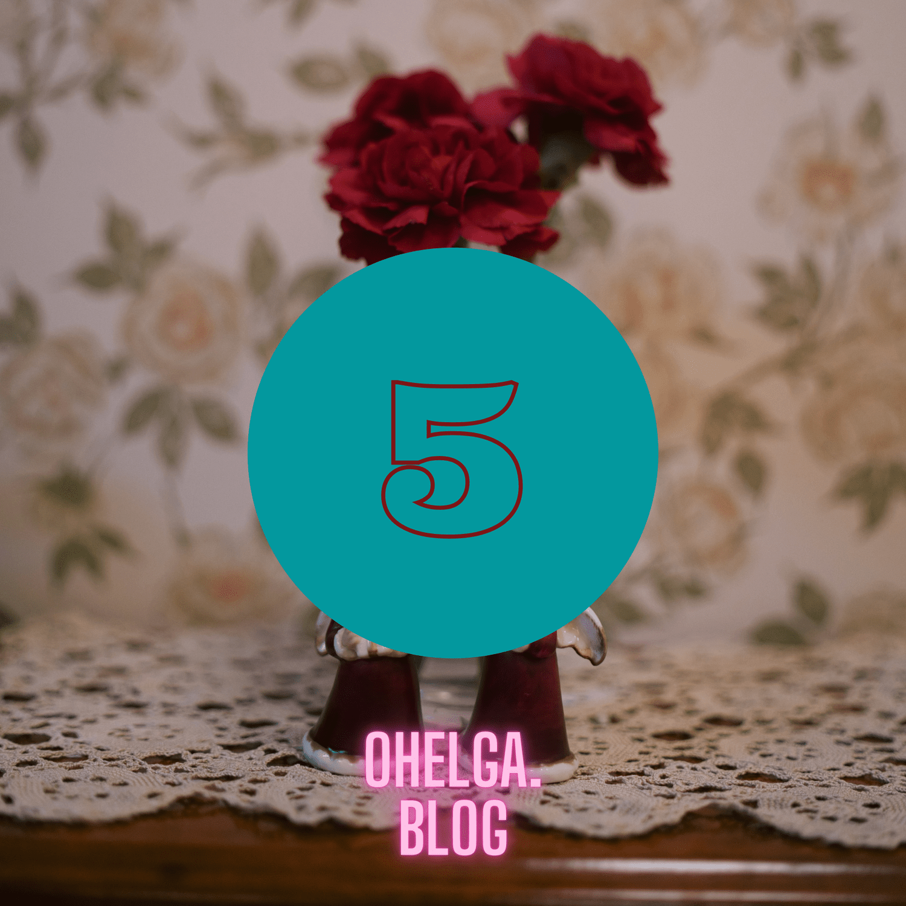

Joulukalenterin viides luukku.
Vad har amputering av en hand, sex timmars hästskjuts och trippel Salchow gemensamt? Lisämausteena se, että Mariah soitti ja haluaa kosketinsoittajansa urut takaisin.
Linkit kappaleeseen:
Apple Musicissa:
på Spotify:

Kommentit / Kommentarer (5)
<p>Jag kan bara hålla med er i resonemanget.</p>
<p>Åhå, nu blev jag överraskad, trodde det skulle komma Tapio Kansa när ni utlovade "Finlands Carola". Den här versionen påminner en om att det inte är många som förmår göra den här låten rättvisa. De flesta sångare klarar inte av att ta de sista höga tonerna, och gör man inte det faller hela idén med att göra låten. Det här kunde ha blivit hur bra som helst, gillar egentligen gospelgreppet här, men det hade också krävt en gospelröst. De har inte Laura V, man märker hur hon håller tillbaka, hon vågar inte "tyng åpå", behöver stöd av kören. Men det var bättre än Backstreetarnas smörklick ändå. Nog vet ni väl att Laura V varit med i Eurovisionen? </p>
<p>Det är bara att knyta på sig skridskorna och göra ett försök. Eller två! :)</p>
<p>Tapani Kansa heter han förstås.</p>
<p>Blev lite nyfiken på varför du trodde/tänkte att T. Kanska skulle vara motsvarigheten till Finlands Carola?</p>
<p>Men bättre än Backstreetarna var det nog!</p>